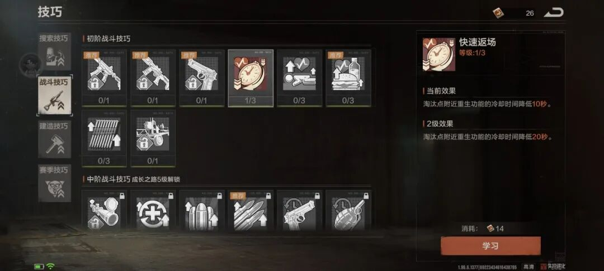
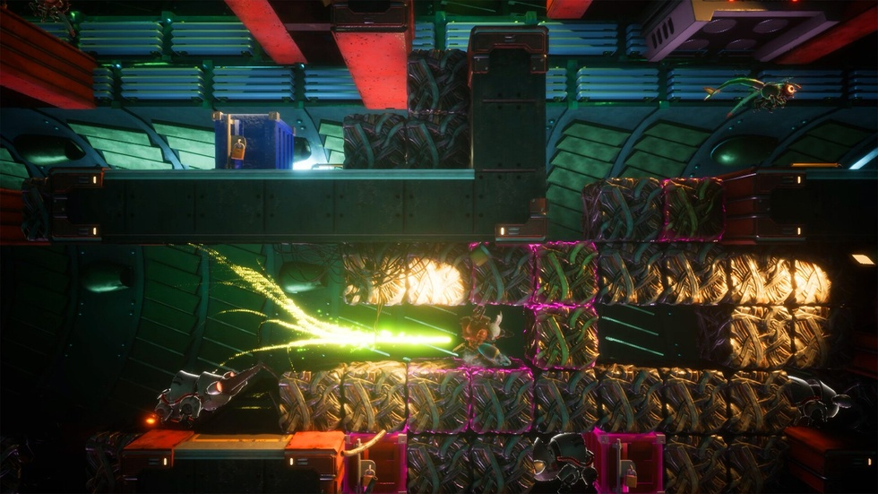

都以为SOC手游活不过三个月
凌晨两点半，游戏里的组队频道还在以每秒刷五条的速度滚动，喊的最多的一句话不是“缺奶妈”也不是“来大佬”，而是“我家被拆了，有没有人收留”。这款主打搜、打、拆的硬核生存游戏上线后迅速登顶iOS免费榜总榜，上线24小时同时在线突破百万，源源不断涌入的玩家把组队频道消息刷得停不下来。奇怪的是，过去几年国内厂商推出的SOC手游大多难以长期运营，不少产品为适配市场直接嫁接MMO养成框架，最终上线没多久热度快速滑落。这套在端游市场验证多年的生存对抗玩法，移植移动端后长期被认定水土不服。但水土不服这事，得看是地不行，还是种子不对。

《失控进化》拿到正版《Rust》玩法授权，核心循环浓缩成三个字：搜、打、拆。拿石头砸树。建家。搓枪。摸据点。抄别人家。被抄。重来。这套生存对抗逻辑，Steam平台的《Rust》《饥荒》《幻兽帕鲁》早就验证过将近十年了。端游玩家享受从零起步、一无所有重新发育的刺激，可大多数手游玩家早就习惯了点一下寻路、再点一下自动战斗的轻量化体验。进游戏头一小时，训练任务把砍树、搭工作台、潜入据点搜物资拆成几十个步骤，做完任务给技巧点，自由选加搜索还是战斗天赋。游戏没刻意哄着新手，也没无脑削挑战难度，玩家进对局一小时上下就能摸到抄家的边。可一旦碰上配合稀烂的队友，辛苦盖的基地被人一锅端，挫败感能直接把人劝退。这套引导方案明显吃透了国内玩家的心态——怕的是漫无目的地瞎逛，但不一定怵硬核，游戏把路标立清楚了，沿途的凶险还是得自己扛。给路标这事听起来简单，但过去真没几家大厂愿意这么干。
门槛降下来的过程中，游戏还是放了不少具体东西下来的。建造蓝图带位置推荐辅助，能帮玩家快速挑个合适的落脚点。死亡惩罚搞了阶梯式，限时突袭模式战败只掉一半随身物资，进阶模式被击败才会清空身上所有家当。开发组还切了低、普通、高、极高四档生存压力，配上安全区、限时突袭、进阶挑战好几种对局模式，玩家按自己实力挑着进就行。差异化模式分流，打破了硬核生存只能吸引核心玩家的老印象，轻度玩家也能找到适合自己的局。门槛是降了，但代价是什么？代价是——你永远不知道队友会不会在背后给你一锤子。

真正把玩家留住的，还是全模式强制开PVP，配套高压反作弊，非法组队行为所有对局模式都严惩。非法抱团在端游《Rust》那边一直没治住，这次移动端一上线就下狠手管，说明团队心里清楚，干净的对抗环境才是这套搜打拆玩法能一直转下去的根基。靠玩家互相博弈产出对局内容，不用堆日常任务和数值养成来硬拉游戏周期。光看开服数据，24小时百万在线确实亮眼，但国内游戏市场从来不缺开局炸的新品，三个月之后掉得只剩零头的，一抓一大把。这款游戏真正扛打的，是那套被市场反复捶打过多年的核心玩法。后续真正要盯的，是两个信号：一个是非法组队的管控力度能不能一直绷住，这决定了对局环境会不会慢慢烂掉；另一个是策划采访时提的切片化教学和技能考证系统，能不能把老带新这种自发的劲头，变成机制上的一层推力。这两点要是都能落地，那它大概率要在国内SOC这个圈子里，把标准重新拉高一个档。而老带新这件事，在《失控进化》里已经冒出一个挺反常规的现象了。
游戏能撑住长线热度，靠的是活泛的社交生态。世界频道的招募信息一直在快速滚动，内置的自荐功能上挂着各种好玩的标签，“大佬求带”“有麦”的标识方便玩家快速组队，对局开打之后，新人也能申请加进来。这些功能单拎出来都不算新鲜，凑到一起就冒出一股不一样的味道：新手不需要会操作，喊一句“我家没了”，就有人拉你进队。玩家社区里的趣味二创也多，马棚陷阱、关门防偷马这类整活视频翻来翻去都是，大家聊的已经不是怎么通关了，而是局里碰上的各种破事。社交不再是个挂件，整个人融进生存建造的流程里了。但这种氛围，不是做几个组队按钮就能长出来的。
不爱硬刚的玩家也有地方待。游戏给休闲玩家留了位置，放下武器专心盖房子、逛地图看风景，也能找到自己的乐子。预约数据一路上涨，说明这热度不是一两天的事：24小时破200万，登岛测试冲到2000万，终极测试再涨到3200万，野人节官宣那会儿预约已经过了4000万。长期攒下来的玩家期待，给公测垫了个厚实的底，也让外界“上线即巅峰”的说法站不住脚。4000万人等着进去挨揍或者盖房子，这个池子比很多人以为的要大得多。
再回过头看开头的问题——为什么这次行了？国内手游市场里，把搜打拆循环做完整的SOC产品掰着手指头数不过来。4000万预约、24小时百万在线，说明这套玩法底下压着一大拨人。后续要是能把PVP环境继续维护好，把教学系统真正落地，它不用去抢别人碗里的玩家，自己就能把SOC这个盘子的边界往外推。凌晨两点半还在滚动的组队频道，比任何空口白话都有说服力——玩家愿意泡在里面的状态，一眼就能看出来。
关于我们
📱 公众号名称：三天游戏
✍️ 作者：曾三天
扫码关注公众号，获取每日最新资讯

商务合作与版权
商务合作 / 内容投稿 / 品牌推广
请关注公众号「三天游戏」后台留言联系
版权声明：本文由作者整理，转载需注明出处。